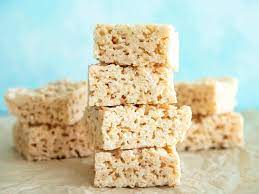

Rice Crispy Treats

Ingredients
- 1/4 cup of butter
- 4 cups of mini marshmellows
- 5 cups of crispy rice cereal
Directions
- Melt butter over low heat. Add mini marshmellows after butter is melted and stir until well mixed, then remove from heat
- Stir in rice cereal until well covered
- Press mixture in to a 9x13 pan using a spatula or wax paper and place in refirdgerator. When cooled cut and enjoy